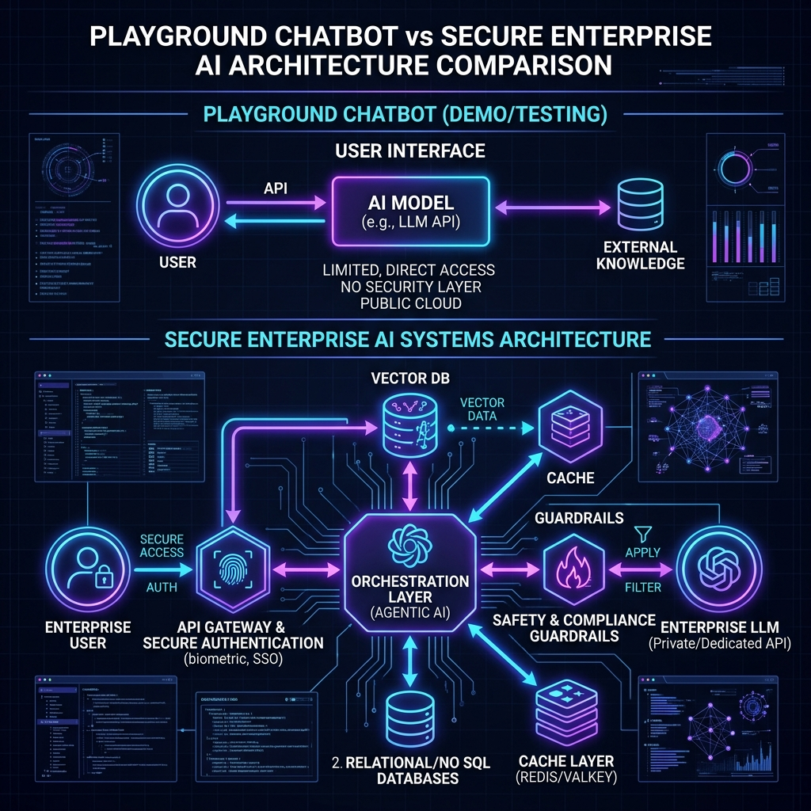

"Welcome to Module 1. Moving LLMs from a playground prototype or an experimental chat window into a secure, scalable production system requires systems engineering—not just clever prompting."
S1
Claude Architect Masterclass
Module 1: Introduction
Background Artifact



📜 Edit Design List (EDL)
0:00 - 0:03
Fade in background artifact with a slight zoom-in animation (Ken Burns).
0:03 - 0:05
Slide in Lower Third from left margin. Hold until end of scene.
0:05 - 0:07
Pop-in "SYSTEMS ENGINEERING" text overlay. Match audio emphasis.
0:10
Trigger Shield and Security icons with a subtle glow pulse.
"Today, we are breaking down the official Claude Architecture Blueprint. We are moving beyond basic API calls to understand model topologies, stateless middleware boundaries, and how the Model Context Protocol changes enterprise integration forever."
S2
Model Context Protocol
Enterprise Integration Layer
Background Artifact


📜 Edit Design List (EDL)
0:12 - 0:15
Cross-dissolve transition from Scene 1 to Scene 2 background.
0:15 - 0:18
Replace Lower Third with "Model Context Protocol" variant.
0:18 - 0:22
Overlay "MCP" text center-screen. Background opacity drops to 30%.
0:23
Animate "Data Pipe" icons moving from LLM to Database.
"All the code, blueprints, and architecture files we cover are live right here on our project hub."
S3
Resource Dashboard
Open Source Architecture Blueprint
Background Artifact


📜 Edit Design List (EDL)
0:28
Focus camera on the browser dashboard recording.
0:30
Display GitHub URL pill overlay.
0:35
Fade to black while speaker finishes the closing sentence.